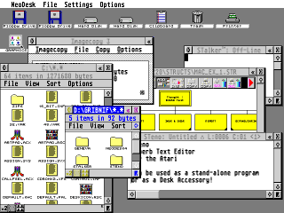

Geneva
Current version: Download Geneva 1.08
The complete multitasking environment for all Atari ST/TT and Falcon computers.
Before Geneva, the Atari was only able to load and run a single program at a time, and was only capable of using six desk accessories (without being forced to restart the computer).

Based on the same concept of "co-operative" multitasking that the GEM environment was originally designed on, Geneva brings to the Atari a complete, easy to use, multitasking environment.
Right: Geneva running NeoDesk4, Imagecopy 3.5, STalker, STeno, and Thought! concurrently.
Features include:
- Multitask unlimited GEM applications.
- Load and unload unlimited desk accessories at any time.
- Open up to 256 windows at once.
- 3-dimensional buttons and window gadgets.
- Keyboard equivalents for all dialog boxes, window gadgets, and dropdown menus.
- Resize windows in any direction (not just to the lower right corner).
- Manipulate, resize, or move windows in the background.
- Tear-off any dropdown menu into its own window.
- Supports custom and animated mouse pointer shapes.
- Run multiple TOS programs, each in its own GEM window.
- Supports custom and animated mouse pointers.
- Run multiple TOS programs, each in its own GEM window.
- Special support for singletasking applications.
- Extensive built-in, context sensitive (hypertext), on-line help.
- Can optionally use the MiNT multitasking kernel.
Unlike other Atari multitasking environments, Geneva runs at the full speed of the computer without any significant speed loss. It can also run just about all older applications, many of which do not work with other multitasking environments.
The included Task Manager sets all of Geneva’s options and allows for the setting of Geneva’s unique "program flags", designed to let Geneva know how to run most existing programs, even those not designed to run in a multitasking environment.
Geneva is fully compatible with the AES 4.x that comes on the Falcon and with MultiTOS. This allows one to run any AES 4.x or MultiTOS ready application on any model machine!
Geneva is also small, requiring less than 200K of memory, meaning that you can run it on any memory configuration. You can even multitask several applications on a one megabyte system.
Geneva also comes with an extensive built-in help facility, which uses a context sensitive, hypertext style approach.
Programmers will be happy to know that we include developer documentation, covering all the details needed in order to take complete advantage of Geneva’s powerful system enhancements in their programs.
We’ve even included the complete source code to the Geneva Task Manager, which shows how to use many of Geneva’s enhancements including dialogs in windows, 3D buttons and dropdown menus in windows.
Geneva does not include a desktop, and it is unable to use the ROM desktop. While a desktop is not needed (Geneva’s advanced Item Selector includes most common file manipulation commands), you can easily add any Geneva or MultiTOS compatible desktop. We, of course, recommend our NeoDesk 4 desktop replacement.